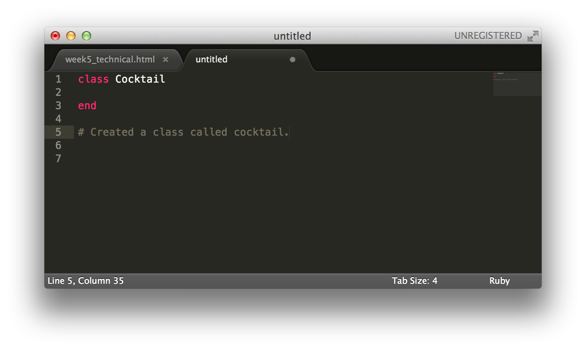
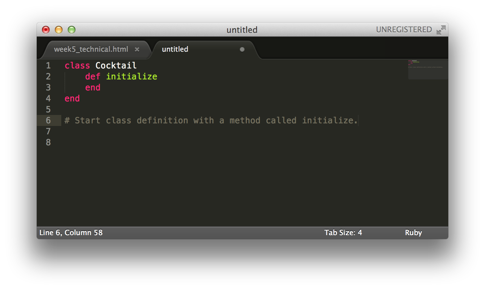
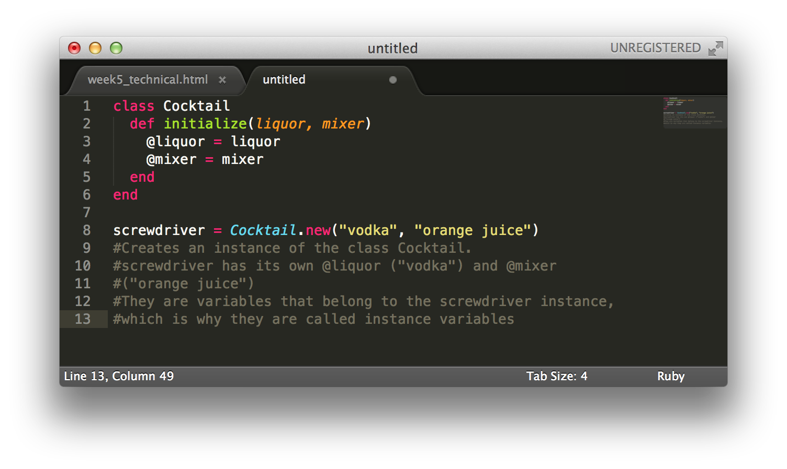
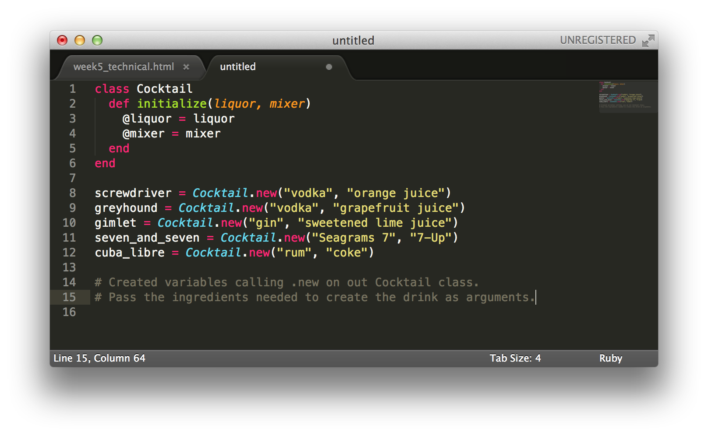
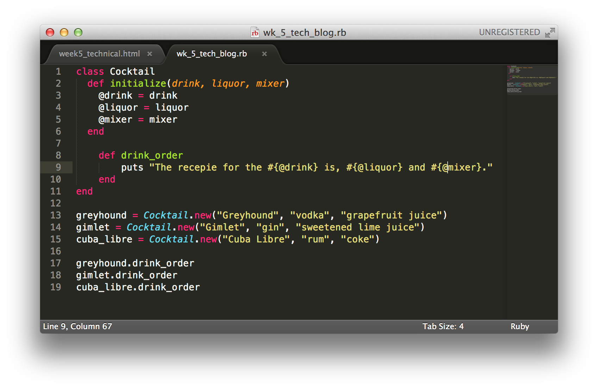
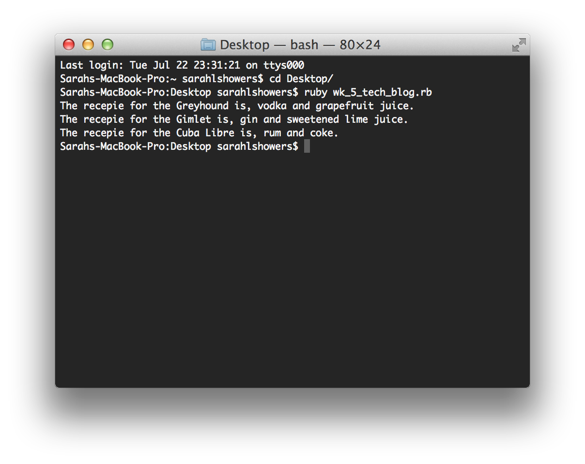

Variables in a Ruby Class - Instance Variable
When you design a class, think about the objects that will be created from that class type.Think about the things the object knows and the things the object does.
Things an object knows about itself are called instance variables. They represent an object's state (the data - for example, the quantity and the product id), and can have unique values for each object of that type.
In Ruby, an instance variable is simply a name preceded by an “at” sign (“@”). This means that the variable is attached to the instance of the class.
Instance variables are available across methods for any particular instance or object. That means that instance variables change from object to object.
Now that I have tried to explain this using words, let me do what I do best - use images and break this down step-by-step, with something that people can relate to, BOOZE!.
First, we have to create a class:
Then, we have to initialize a method.
Ok, so lets create our first cocktail, a Screwdriver.
Now, we will create a bunch of different cocktails using .new/
We have everything we need, let's tie it all together with the recipe of our drink orders and look at the output in the terminal.
 